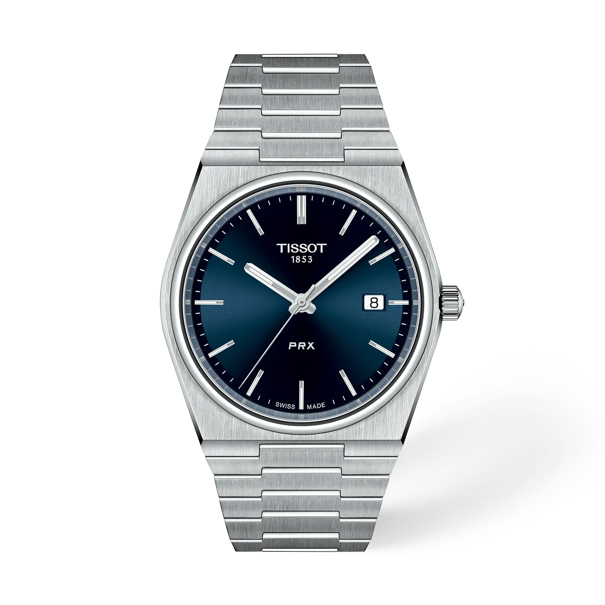

ChronoID est un site dédié à l’univers de l’horlogerie. Découvrez de nombreuses montres et marques, explorez notre catalogue et retrouvez facilement le modèle qui vous correspond grâce à la recherche intégrée.

Le site en un coup d’œil
Liste de montres
Toutes les montres classées par marque. Cliquez sur le logo d’une marque pour afficher ses modèles, puis sur une montre pour voir sa fiche complète.
Liste de souhaits
Gardez de côté les montres qui vous plaisent grâce au cœur de chaque fiche. Elles restent enregistrées dans votre navigateur.
Chercheur de montres
Répondez à quelques questions (budget, taille de poignet, usage…) et découvrez les montres qui vous correspondent le mieux.